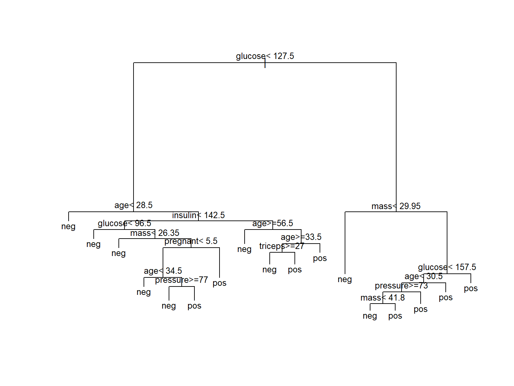
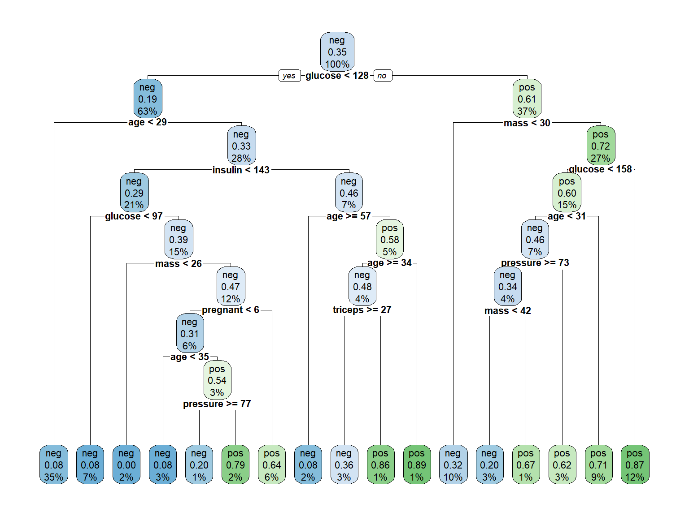

Code
data("PimaIndiansDiabetes2", package = "mlbench")PIMA indians example
The Pima Indian Diabetes data set (PimaIndiansDiabetes2) is available in the mlbench package.
data("PimaIndiansDiabetes2", package = "mlbench")The data contains 768 individuals (female) and 9 clinical variables for predicting the probability of individuals in being diabete-positive or negative:
dplyr::glimpse(PimaIndiansDiabetes2)Rows: 768
Columns: 9
$ pregnant <dbl> 6, 1, 8, 1, 0, 5, 3, 10, 2, 8, 4, 10, 10, 1, 5, 7, 0, 7, 1, 1…
$ glucose <dbl> 148, 85, 183, 89, 137, 116, 78, 115, 197, 125, 110, 168, 139,…
$ pressure <dbl> 72, 66, 64, 66, 40, 74, 50, NA, 70, 96, 92, 74, 80, 60, 72, N…
$ triceps <dbl> 35, 29, NA, 23, 35, NA, 32, NA, 45, NA, NA, NA, NA, 23, 19, N…
$ insulin <dbl> NA, NA, NA, 94, 168, NA, 88, NA, 543, NA, NA, NA, NA, 846, 17…
$ mass <dbl> 33.6, 26.6, 23.3, 28.1, 43.1, 25.6, 31.0, 35.3, 30.5, NA, 37.…
$ pedigree <dbl> 0.627, 0.351, 0.672, 0.167, 2.288, 0.201, 0.248, 0.134, 0.158…
$ age <dbl> 50, 31, 32, 21, 33, 30, 26, 29, 53, 54, 30, 34, 57, 59, 51, 3…
$ diabetes <fct> pos, neg, pos, neg, pos, neg, pos, neg, pos, pos, neg, pos, n…A typical classification/prediction problem is to build a model that can distinguish and predict diabetes using some or all the variables in the dataset.
A quick exploration can be done wirh the skimr package:
library(skimr)
skim(PimaIndiansDiabetes2)| Name | PimaIndiansDiabetes2 |
| Number of rows | 768 |
| Number of columns | 9 |
| _______________________ | |
| Column type frequency: | |
| factor | 1 |
| numeric | 8 |
| ________________________ | |
| Group variables | None |
Variable type: factor
| skim_variable | n_missing | complete_rate | ordered | n_unique | top_counts |
|---|---|---|---|---|---|
| diabetes | 0 | 1 | FALSE | 2 | neg: 500, pos: 268 |
Variable type: numeric
| skim_variable | n_missing | complete_rate | mean | sd | p0 | p25 | p50 | p75 | p100 | hist |
|---|---|---|---|---|---|---|---|---|---|---|
| pregnant | 0 | 1.00 | 3.85 | 3.37 | 0.00 | 1.00 | 3.00 | 6.00 | 17.00 | ▇▃▂▁▁ |
| glucose | 5 | 0.99 | 121.69 | 30.54 | 44.00 | 99.00 | 117.00 | 141.00 | 199.00 | ▁▇▇▃▂ |
| pressure | 35 | 0.95 | 72.41 | 12.38 | 24.00 | 64.00 | 72.00 | 80.00 | 122.00 | ▁▃▇▂▁ |
| triceps | 227 | 0.70 | 29.15 | 10.48 | 7.00 | 22.00 | 29.00 | 36.00 | 99.00 | ▆▇▁▁▁ |
| insulin | 374 | 0.51 | 155.55 | 118.78 | 14.00 | 76.25 | 125.00 | 190.00 | 846.00 | ▇▂▁▁▁ |
| mass | 11 | 0.99 | 32.46 | 6.92 | 18.20 | 27.50 | 32.30 | 36.60 | 67.10 | ▅▇▃▁▁ |
| pedigree | 0 | 1.00 | 0.47 | 0.33 | 0.08 | 0.24 | 0.37 | 0.63 | 2.42 | ▇▃▁▁▁ |
| age | 0 | 1.00 | 33.24 | 11.76 | 21.00 | 24.00 | 29.00 | 41.00 | 81.00 | ▇▃▁▁▁ |
Start building a simple tree with default parameters
library(rpart)
model1 <- rpart(diabetes ~., data = PimaIndiansDiabetes2)
# par(xpd = NA) # otherwise on some devices the text is clippedThis builds a model consisting of a series of nested decision rules.
print(model1)n= 768
node), split, n, loss, yval, (yprob)
* denotes terminal node
1) root 768 268 neg (0.65104167 0.34895833)
2) glucose< 127.5 485 94 neg (0.80618557 0.19381443)
4) age< 28.5 271 23 neg (0.91512915 0.08487085) *
5) age>=28.5 214 71 neg (0.66822430 0.33177570)
10) insulin< 142.5 164 48 neg (0.70731707 0.29268293)
20) glucose< 96.5 51 4 neg (0.92156863 0.07843137) *
21) glucose>=96.5 113 44 neg (0.61061947 0.38938053)
42) mass< 26.35 19 0 neg (1.00000000 0.00000000) *
43) mass>=26.35 94 44 neg (0.53191489 0.46808511)
86) pregnant< 5.5 49 15 neg (0.69387755 0.30612245)
172) age< 34.5 25 2 neg (0.92000000 0.08000000) *
173) age>=34.5 24 11 pos (0.45833333 0.54166667)
346) pressure>=77 10 2 neg (0.80000000 0.20000000) *
347) pressure< 77 14 3 pos (0.21428571 0.78571429) *
87) pregnant>=5.5 45 16 pos (0.35555556 0.64444444) *
11) insulin>=142.5 50 23 neg (0.54000000 0.46000000)
22) age>=56.5 12 1 neg (0.91666667 0.08333333) *
23) age< 56.5 38 16 pos (0.42105263 0.57894737)
46) age>=33.5 29 14 neg (0.51724138 0.48275862)
92) triceps>=27 22 8 neg (0.63636364 0.36363636) *
93) triceps< 27 7 1 pos (0.14285714 0.85714286) *
47) age< 33.5 9 1 pos (0.11111111 0.88888889) *
3) glucose>=127.5 283 109 pos (0.38515901 0.61484099)
6) mass< 29.95 75 24 neg (0.68000000 0.32000000) *
7) mass>=29.95 208 58 pos (0.27884615 0.72115385)
14) glucose< 157.5 116 46 pos (0.39655172 0.60344828)
28) age< 30.5 50 23 neg (0.54000000 0.46000000)
56) pressure>=73 29 10 neg (0.65517241 0.34482759)
112) mass< 41.8 20 4 neg (0.80000000 0.20000000) *
113) mass>=41.8 9 3 pos (0.33333333 0.66666667) *
57) pressure< 73 21 8 pos (0.38095238 0.61904762) *
29) age>=30.5 66 19 pos (0.28787879 0.71212121) *
15) glucose>=157.5 92 12 pos (0.13043478 0.86956522) *The model can be visualized using a tree:
plot(model1)
text(model1, digits = 3, cex=0.8)
A nicer plot can be obtained using the rpart.plot function from the rpart.plot package. This function allows for multiple tunings, but the default values may already yield a nice informative plot.
library(rpart.plot)
rpart.plot(model1, cex=.7)
detach(package:rpart.plot)If we believed the model was ready for use we could use it to predict diabetes for new subject.
Imagine we kow nothing about overfitting. We may want to check the accuracy of the model on the dataset we have used to build it.
predicted.classes<- predict(model1, PimaIndiansDiabetes2, "class")
mean(predicted.classes == PimaIndiansDiabetes2$diabetes)[1] 0.8294271A better strategy is to use train dataset to build the model and a test dataset to check how it works.
set.seed(123)
ssize <- nrow(PimaIndiansDiabetes2)
propTrain <- 0.8
training.indices <-sample(1:ssize, floor(ssize*propTrain))
train.data <- PimaIndiansDiabetes2[training.indices, ]
test.data <- PimaIndiansDiabetes2[-training.indices, ]Now we build the model on the train data and check its accuracy on the test data.
model2 <- rpart(diabetes ~., data = train.data)
predicted.classes.test<- predict(model2, test.data, "class")
mean(predicted.classes.test == test.data$diabetes)[1] 0.7272727The accuracy is good, but smaller, as expected.